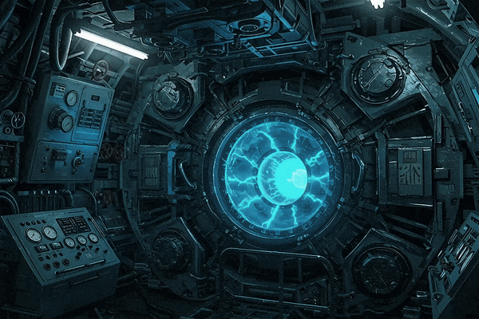

⏦ Station Abyssale‑6 ⏦
Station Abyssale-6 est un jeu d'aventure immersif qui
combine une interface graphique Java avec une narration textuelle.
Le joueur incarne un survivant dans une station de recherche sous-marine
en perdition à 1000 mètres de profondeur. Objectif : rétablir le courant
avant que l'oxygène ne s'épuise (timer 10 minutes). Échangez avec les
PNJ, collectez des objets, résolvez le puzzle du réacteur et utilisez le
Beamer pour vous téléporter !
⚙️ Capture écran


🗺️ Carte 3D de la Station
◆ Échanges & aides ◆ Personnages fixes ou mobiles (suivent le joueur / chemin prédéfini)
⚡ Poids, utilisabilité, système d'échange et Craft (téléporteur, cookie magique, combinaison...)
🌀 MÉCANIQUES SPÉCIALES
📡 Beamer (téléporteur)
Chargez le Beamer dans une pièce (charge), puis utilisez fire pour y retourner instantanément – indispensable pour l’exploration.
🍪 Magic Cookie
Augmente définitivement la capacité de portage de +13 kg. Obtenu via échange avec le docteur (contre bouteille d'oxygène).
🔋 Torche & Easter Egg
Dans l'Observatoire, utilisez la torche (use torche) avec batterie >15% pour révéler un secret animé.
🌀 Transporter Room
Pièce spéciale qui téléporte aléatoirement. Commande alea [roomKey] (mode test) pour forcer la destination.
🧩 Puzzle du réacteur
Atteignez la salle du réacteur pour activer le puzzle électrique (8 interrupteurs, voltmètre). Bonne résolution = Victoire !
💾 Sauvegarde XML
save nom / load nom : tout l'état (pièces, inventaire, PNJ mobiles, portes verrouillées) est sauvegardé.
🧾 OBJECTIF & INNOVATIONS
Créer une expérience immersive mêlant aventure textuelle, graphismes dynamiques, PNJ échangeurs, système de poids, puzzles et téléportation.
3.0.21Mai 2026
Alexander KAZAZYANDéveloppeur principal & game design
🏗️ STRUCTURE DU PROJET (Java)
Packages principaux
🎮 pkg_core
GameEngine, GameGUI, Parser – cœur du jeu, gestion des commandes, timer, transitions.
🗺️ pkg_gameplay
Room, Door, TransporterRoom – gestion des salles, portes verrouillées, téléportation aléatoire.
👥 pkg_characters
Player, Character, MovingCharacter – inventaire, poids, déplacement (aléatoire, chemin, suivi joueur).
📦 pkg_items
Item, Beamer, MagicCookie, DivingSuit, Torch – chaque objet a un type, poids, image, utilisabilité.
🖥️ pkg_ui_components
TransitionPanel, InventoryPopup, EasterEggDialog, PuzzlePage – interface graphique interactive.
⚙️ pkg_utility
Lang (i18n), MusicPlayer, GameSaverXML / GameLoaderXML – internationalisation, sons, sauvegarde.
⌨️ COMMANDES DISPONIBLES
✨ Les PNJ réagissent aux objets donnés (échanges) et fournissent des indices. Le beamer se charge dans une pièce et permet de s'y téléporter instantanément.
📐 MAQUETTE ARCHITECTURALE (CANVA)
Diagramme des flux, mapping des salles et design narratif de la station.
🎬 EXPLORATION & ARCHITECTURE
🎙️ AUDIO BLOG – Les Rouages de la Station
🔊 Les rouages de l'abysse
Un podcast‑éclair qui explore les coulisses du développement de Station Abyssale‑6. Architecture logicielle, choix narratifs, défis techniques et immersion sonore. Écoutez les mécanismes cachés de la station.
🎧 Format MP3 – 128 kbps – durée ~ 21 min.
💡 Cliquez sur lecture, réglez votre volume. Pas d'autoplay forcé
pour respecter votre navigation.
🔄 SYSTÈME D'ÉCHANGE & QUÊTES
Beamer ↔ Bouteille Oxygène
Oxygène ↔ Magic Cookie
Torche ↔ Carte bleue
Échantillon génétique ↔ Combinaison
Carte bleue ↔ Trousse de soin
Trousse soin ↔ Carte rouge
✅ Donnez l'objet requis à un PNJ avec give <objet> pour recevoir le nouvel objet. Certains personnages se déplacent (MovingCharacter) et peuvent suivre le joueur.
📦 TÉLÉCHARGEMENT & PRÉREQUIS
🙏 REMERCIEMENTS
Je remercie tout d'abord le Professeur Denis BUREAU pour ses cours, son accompagnement et sa passion pour le développement transmise tout au long de ce projet.